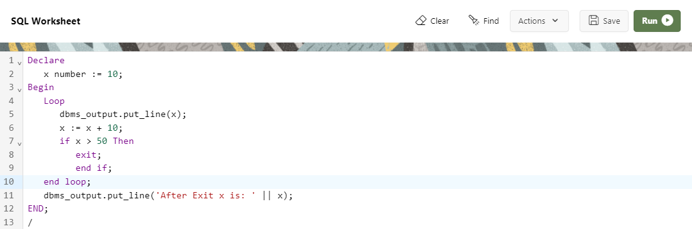
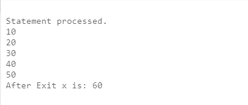
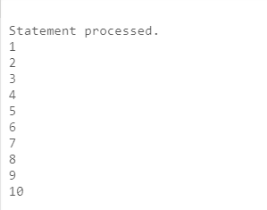
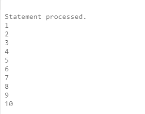

Loop/Iterative Control
Iterative control statement or loop control structure are used when we want to repeat the execution of one or more statement for specified number of times.
PL/SQL provides the following types of loops :
(i) Basic loop / simple loop
(ii) WHILE loop
(iii)FOR loop
(i) simple loop
The simplest loop statement is the basic (or infinite) loop, which
encloses a squence of statement between the keywords LOOP and END LOOP. A basic loop allows
execution of its statement at least once, even if the condition is already met upon entering the
loop. without the EXIT statement, the loop would be infinite or endless.
The EXIT Statement : you can use the EXIT statement to terminate a loop, control passes to
the next statement after the END LOOP statement. The EXIT statement must be placed inside a loop.
you can also attach a WHEN clause to allows conditional termination of the loop.
The Syntax of simple loop
LOOP
statement;
.....
EXIT [WHEN condition];
END LOOP;
The Example of simple loop
 (ii) WHILE loop
you can use the WHILE loop to repeat a squence of statement until the controlling condition is TRUE. The condition is evaluatedat the start of each iteraction. The loop terminates when the condition is FALSE. If the condition is FALSE at the start of the loop, then no further iteraction are performed.
The Syntax of WHILE loop
WHILE condition
loop
statement1;
statement2;
......
END loop;
The Example of WHILE loop
 

(iii) FOR loop
For loop have the same gerneral structure as the basic loop. In addition, they have a control statement before the LOOP keyword to determine the number of iteraction that PL/SQL performs.
The Syntax of FOR loop
FOR variable_name in start..end
loop
statement1;
statement2;
......
END loop,
The Example of FOR loop